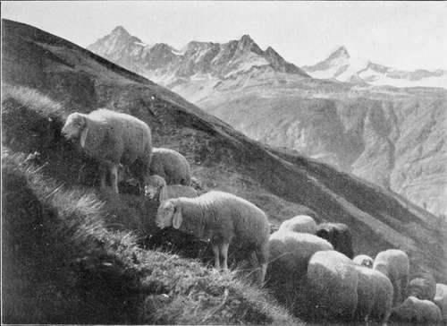

Hints On Amateur Portraiture. Part 2
Description
This section is from the book "The Barnet Book Of Photography", by Herts Barnet. Also available from Amazon: The Barnet Book Of Photography.
Hints On Amateur Portraiture. Part 2
Type Of Lens
This will in many cases be governed by a matter of costs, i.e. how much the worker is disposed to pay for his lens. But in any case, as an amateur's advice to amateurs, let us say, Do not buy a portrait lens. They are costly, they are bulky, and in nearly every case one has to stoop down so much that the quality for which the extra price is usually supposed to be paid, viz. rapidity (large aperture), is annulled.
All things considered, we recommend a stigmatic lens of modern type. This usually works at about //6*5, and often may be used at full aperture. Next come lenses of the rapid symmetrical type, working at f/8. For outdoor work these are quite quick enough for ordinary portraiture. Next cheaper are the single landscape lenses, working at fjii. Indeed, for a well-lighted room or a conservatory this type of lens holds its own against all others when soft definition is appreciated. Finally, we can get quite good portraits with ordinary spectacle lenses, costing, unmounted, about 6d. each, provided we do not look for great speed or very sharp definition over a large area. These lenses can easily be mounted on a home-made card tube, with a fixed stop of blackened card. The meniscus form is the best; the concave side turned towards the sitter, and the stop between the lens and sitter. First ascertain the equivalent focus of the lens by focussing a distant object, and make the diameter of the circular opening of the stop -j1,; of this equivalent focal length. As to the position of the stop, focus on a building and get a friend to shift the stop to and fro until you get the position of most even definition, illumination, and least distortion.
The visual and chemical foci of such a lens will not coincide. Therefore, to get the sharpest definition on the negative, one must first focus as sharply as possible on the ground glass, and then bring the ground glass ,a " little nearer " the lens. How much this " little " is depends on the kind of glass and focal length and curvature of the lens. In general, we may reckon ^ the focal length as the approximate correction. (This, for a 7-inch lens, would be or, say, J inch.) In portraiture, however, we do not want the sharpest possible definition for pictorial effect, and therefore we should only take about half this correction (say, I inch with a 7-inch lens).
Size Of Stop
The size of the stop to be used in portraiture and the degree of definition are matters calling for a hint or two for the beginner, who is often tempted to think that the sharper the definition the better the picture. This is by no means so, and especially in the case of portraiture, when a general impression is of far greater importance than any special detail. Let the reader pause a moment and attempt accurately to draw or describe the exact shape of the features of any tolerably familiar acquaintance. It is easy to get as far as "a prominent nose, firm lips, laughing eyes,"etc, etc, but when it comes to exact shapes, sizes, etc, what then ? A friend may have a scar on his cheek ; we may know its exact shape, size, colour, position, but it is not that which makes the portrait. True, it is part, but only one among many other factors. But an experiment will often convince when dogmatising raises antagonism. Therefore, let the reader take two portraits of the same sitter. Let one be "sharp-all-over," even to the collar stud and pattern of the tie, etc. Let the other be only just sharp enough to show shapes and forms, but not to show the threads of the draperies or single hairs in eyebrows, etc. Or, again, print a sharp-all-over negative on smooth paper and on rough, and let the comparison of results speak for themselves.
No rules can be laid down, nor are they desirable. It is better to look at one's sitter, and then slowly close one's eyes until just the desirable degree of softness of definition is seen through the partly-closed lids. Note this, and then aim to get this effect on the ground glass by changing the stop and using the focussing screw.
One principle seems of general application—viz. that it is not good for pictorial purposes (landscape or portrait) to have such sharp or such fuzzy definition as to call attention to itself for either extreme. If one part of a picture be conspicuously sharp or out of focus as compared with the rest, this extreme part, by sheer force of contrast to the neighbouring parts, is apt to call (unworthy) attention to itself. Portrait and other lenses of large aperture are apt to have but little depth of focal field or depth of focus, and also some have curvature of the field as well, so that with such a lens we may have one eye in a " three-quarter" portrait sharply defined, and the other eye almost unintelligible. Or one part of a man's beard may look like pin-wire, and the other part like cotton-wool or smoke. Clearly such inconsistencies have only to be mentioned to be condemned. At the same time, a warning against the other extreme (monotony of definition) is equally called for. One of the symptoms of the early stages of the photographic epidemic is the all-absorbing desire to " get it all in sharp focus." We see cousin Kate or uncle Tom posed against a background of brick wall. The print shows us every leaf, every joint of brickwork, every button, every stripe of the garments. The total is a bewildering mass of irritating detail. The more the eye looks the more irritated it becomes. This naturally brings us to the vastly important subject of.
Backgrounds
It is not too much to say that the success or failure of a pictorial portrait is largely due to the background. One thing is certain, viz. that it is not possible to make a good portrait without a good (i.e. suitable) background. It therefore behoves the amateur never to lose sight of this factor. This point is here insisted on, because in the majority of cases the amateur's first portraits are obviously taken without any thought whatever being given to this matter. The victim is made to stand against a brick wall, with a bewildering number of lines or joints showing, or against a trellis-work screen, which may or may not be covered with ivy or some other foliage, where every leaf has a glittering patch of light to catch and irritate the eye. Or perhaps he stands in the middle of the lawn, with a fowl-pen or row of houses in the distance. If these are sufficiently sharp to be recognisable they appear as objects of ugliness, or if out of focus they form distracting blotches. If the experiments are made in a room we have perhaps a fidgeting wall-paper pattern, or irritating patches of pictures on the wall, etc. There is only one rule to be laid down, viz. that the background, whatever it may be, must not attract attention to itself, and therefore away from the portrait.
Mountain Pastures. By G. R. Ballance.
Continue to:
Tags
paper, print, negative, exposure, lens, development, camera, focus